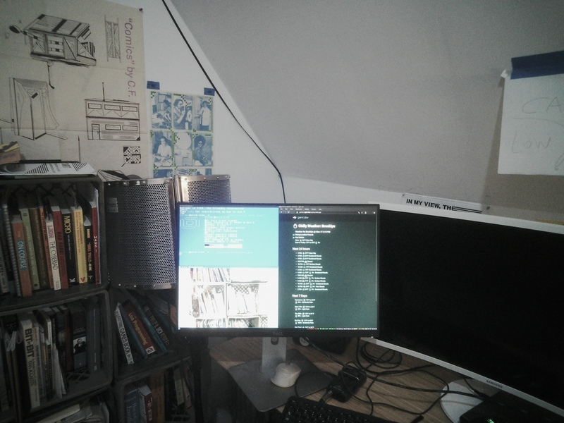
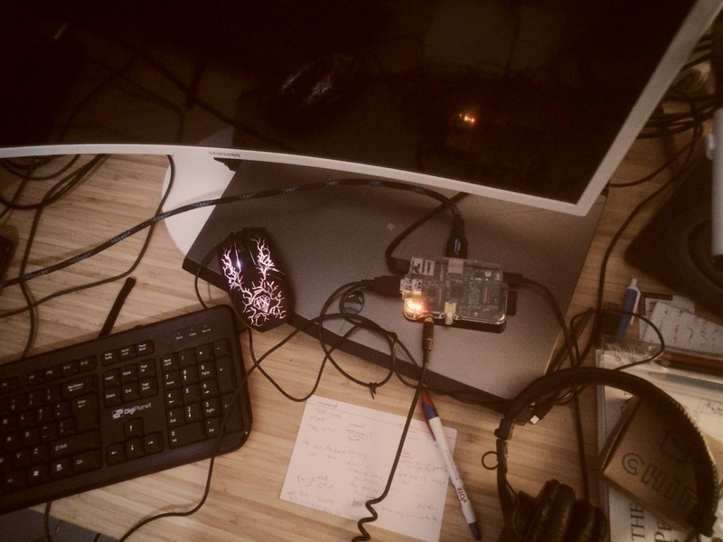

Lee Tusman
↩ Everyday
<
>
Title: Old Computer Challenge 2023
Year: 2023
Medium: Raspberry Pi computer
URL: nosebook/old-computer-challenge↩
Description:
From July 10 - 17, 2023 I participated in the Old Computer Challenge 2023, an informal week-long event where disparate folks interested in smol computing such as Project Gemini, permacomputing, and reducing tech consumption spend a week using old or ancient computing technology as their main machine and report back on their experiences. You can read my nosebook blog for details. I set up Void Linux running on a Raspberry Pi 1B I had in a shoebox. I purchased the Pi in 2013 as I was first learning to code, and set it up as a retro game machine, then taught a workshop on the topic at The Hacktory in Philadelphia, RIP. I first ran just the command line for a few days, but decided I wanted multi screens and some GUI apps and photos, but that's when things started to slow down considerably. All in all, I had a positive experience getting things to work, trying to take things slow on such a low-powered machine, and I'll be doing some further follow-up tests as I work on some permacomputing archival projects.


 ©opyleft
©opyleft